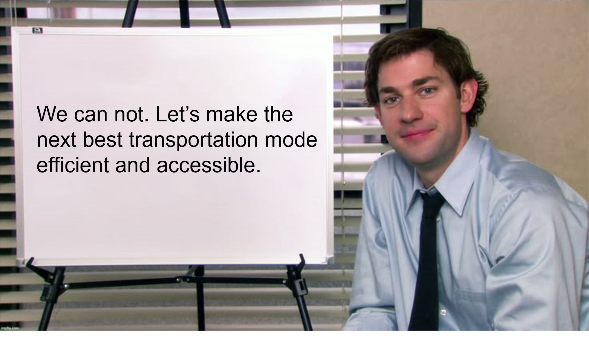
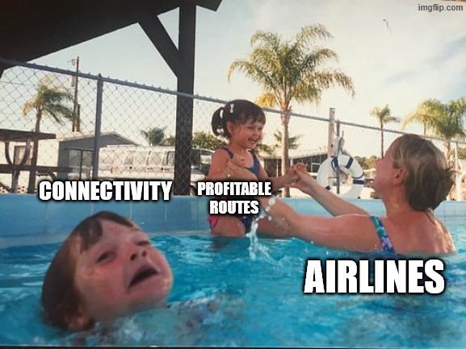
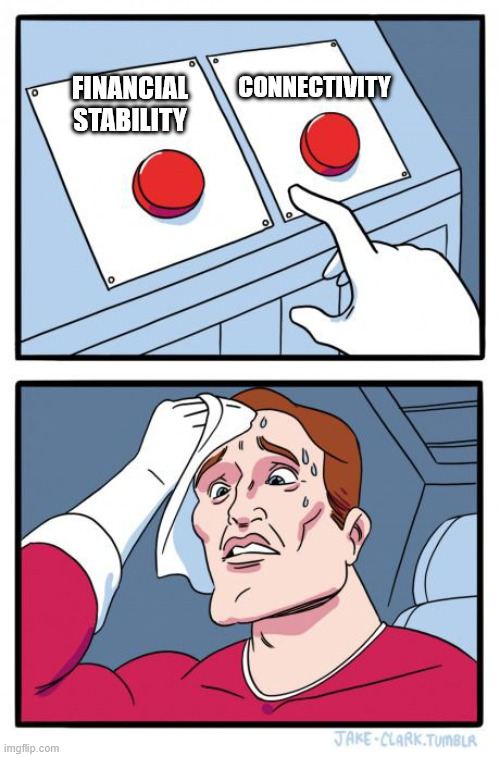
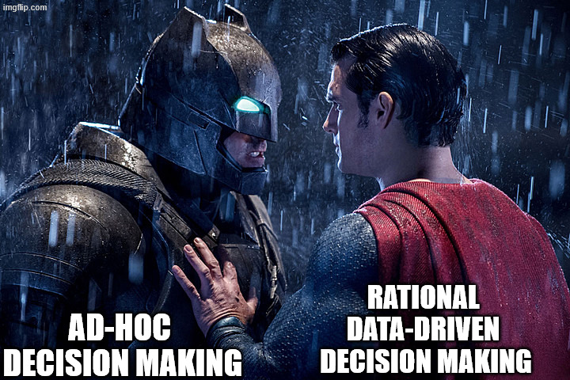
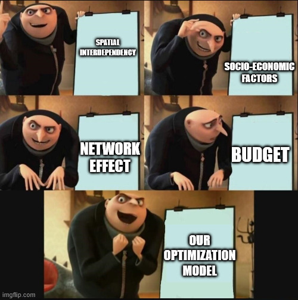
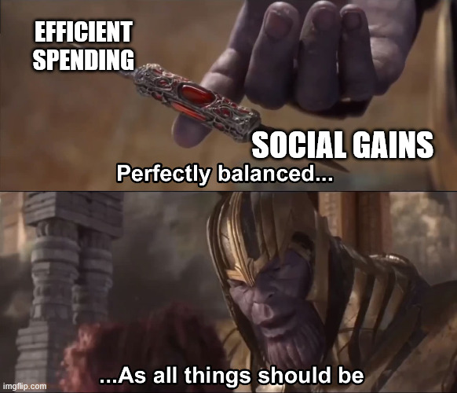

Why do governments support airports and air routes?
Because market forces alone do not always protect essential connectivity. The research suggests that better air connectivity improves access to markets, capital, people, services, and ideas, thereby enhancing the region's economic potential. Hence, governments worldwide have adopted various Regional Connectivity schemes as policy tools to boost economic growth and improve accessibility post liberalisation and deregulation.
Why are we doing this research?

Airlines follow profit, not always connectivity

Private airlines naturally focus on profitable routes. That can leave essential connectivity underserved, especially in remote or lower-demand regions.
Why government intervention often faces issues

Policy must balance two conflicting goals: commercial sustainability and broader social connectivity.
Ad-hoc selection is not enough

Governments across the globe have struggled to implement regional connectivity schemes efficiently due to conflicting objectives.The key problem is not just whether to support connectivity, but how to select the right airports and routes. Decisions should shift from ad hoc judgment to rational, data-driven policy.
Our model brings the pieces together

Our optimization framework combines spatial interdependency, socio-economic factors, network effects, budget constraints, and demand considerations for better decision making.
Efficient spending with social gains

The goal is not simply to spend more or support more airports. The goal is to spend smarter, improve connectivity, and maximize public benefit.
What problem are we solving?
We want a systematic way to choose airports and routes for regional connectivity schemes, instead of relying on random or ad-hoc selection.
What makes this research different?
The framework combines network structure, demand, and policy constraints, thereby capturing practical aviation effects.
Why use memes?
Memes make the research easier to remember and help non-specialists understand the main idea quickly.
What should policymakers remember?
Public support is useful, but it should be guided by evidence, rational criteria, and a clear objective: improve connectivity while using public resources efficiently.